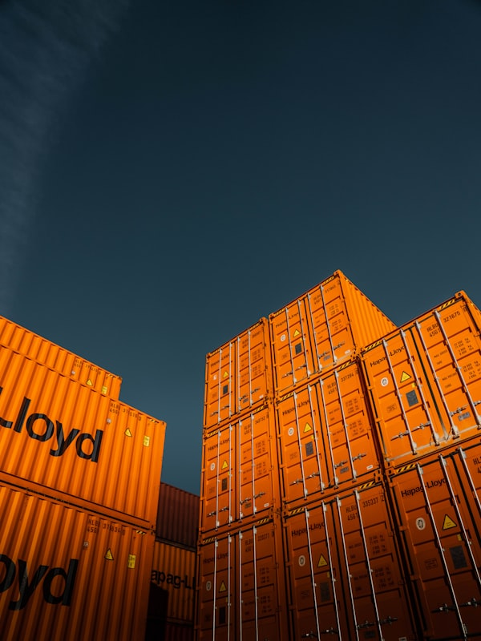
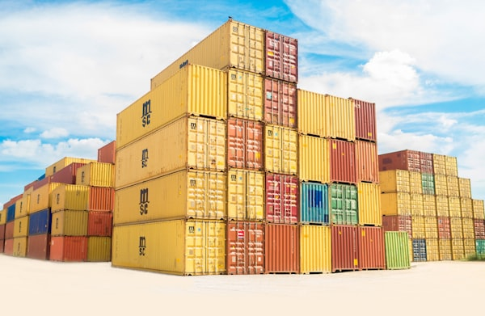

Asset-Based Transportation
Dedicated fleet resources providing greater reliability and operational control.

Delivering Smarter Logistics Across Pakistan, Afghanistan & Central Asia. Skylink Corridor connects businesses through reliable transportation, warehousing, freight forwarding, and supply chain solutions.
Skylink Corridor is a leading integrated logistics and transportation company committed to delivering reliable, innovative, and customer-focused supply chain solutions. We combine transportation, warehousing, freight forwarding, distribution, and technology-driven logistics services to help businesses improve operational efficiency and accelerate growth.
From domestic transportation across Pakistan to complex cross-border operations connecting Afghanistan and Central Asia, our expertise enables customers to move products with confidence through every stage of the supply chain.
Learn More About Us →
Our comprehensive portfolio of logistics services is designed to simplify complex supply chains while improving visibility, efficiency, and customer satisfaction.
Dedicated fleet operations, FTL, LTL, asset trucking, container transportation, and nationwide distribution.
Learn More ›
Modern warehousing, inventory management, cross-docking, retail consolidation, order fulfillment, and value-added logistics.
Learn More ›
International air freight, ocean freight, customs clearance, documentation, and multimodal transportation.
Learn More ›Specialized transportation connecting Pakistan, Afghanistan, and Central Asian markets through secure, compliant operations.
Learn More ›
Inventory management, order fulfillment, last-mile delivery, reverse logistics, and customer-centric distribution.
Learn More ›Explore our full portfolio of logistics solutions
Every industry has unique supply chain challenges. Our specialized logistics expertise enables us to develop customized solutions that improve efficiency while reducing operational complexity.
Choosing Skylink Corridor means partnering with a logistics provider committed to your long-term success.
Dedicated fleet resources providing greater reliability and operational control.
Deep knowledge of Pakistan, Afghanistan, and Central Asian trade corridors.
Flexible logistics programs designed around your operational requirements.
Technology-enabled shipment tracking and performance reporting.
Industry experts delivering dependable logistics execution every day.
Building long-term partnerships through transparency, responsiveness, and continuous improvement.

We believe sustainable logistics creates lasting value for customers, communities, and the environment. By integrating sustainability into our operations, we help customers achieve both environmental and business objectives.
Whether you require transportation, warehousing, freight forwarding, or fully managed logistics services, Skylink Corridor is ready to become your trusted logistics partner.